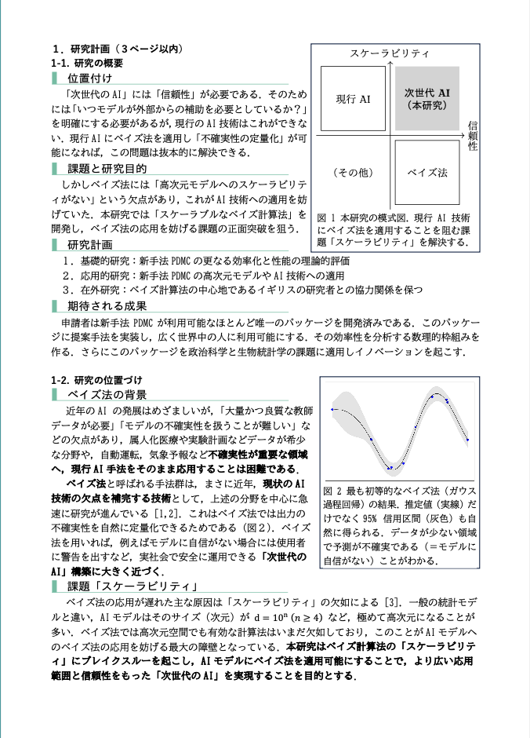
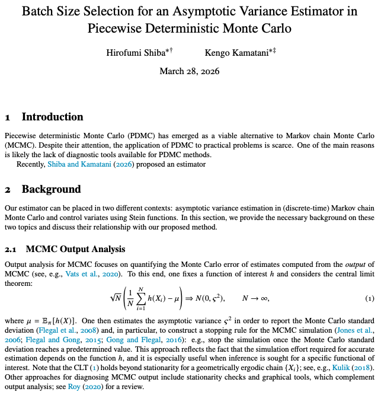
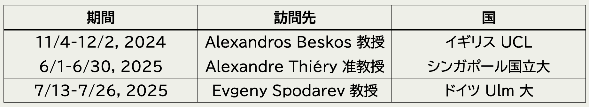

SOKENDAI 特別研究員
研究状況発表会
3/30/2026
1 研究計画


発表者開発の
PDMPFlux.jl パッケージからの出力．2.4 研究結果（要約）
- FECMC 解析の技術的困難を乗り越えて，理論を拡張
- FECMC が高次元で常に効率的であることを示した

100 次元 Gauss の U(x)=\|x\|^2 推定における有効サンプルサイズ (ESS)
2.5 主貢献1：スケーリング極限の導出
FECMC のスケーリング極限は BPS と同じ形

dY_t^{\textcolor{#0096FF}{\text{B}}}=-\frac{\sigma^2_{\textcolor{#0096FF}{\text{B}}}(\rho)}{4}Y_t^{\textcolor{#0096FF}{\text{B}}}\,dt+\sigma_{\textcolor{#0096FF}{\text{B}}}(\rho)\,dB_t
\sigma^2_{\textcolor{#0096FF}{\text{B}}}(\rho)=8\int^\infty_0e^{-\rho s}\operatorname{E}[R_0^{\textcolor{#0096FF}{\text{B}}}R_s^{\textcolor{#0096FF}{\text{B}}}]\,ds

dY_t^{\textcolor{#E95420}{\text{F}}}=-\frac{\sigma^2_{\textcolor{#E95420}{\text{F}}}(\rho)}{4}Y_t^{\textcolor{#E95420}{\text{F}}}\,dt+\sigma_{\textcolor{#E95420}{\text{F}}}(\rho)\,dB_t
\sigma^2_{\textcolor{#E95420}{\text{F}}}(\rho)=8\int^\infty_0e^{-\rho s}\operatorname{E}[R_0^{\textcolor{#E95420}{\text{F}}}R_s^{\textcolor{#E95420}{\text{F}}}]\,ds
A Blog Entry on Bayesian Computation by an Applied Mathematician
$$
$$
2.7 拡散係数の比較 FECMC v. BPS

2.8 実験との整合：FECMC v. BPS

3.3 PDMP の収束診断法の開発



3.4 共同研究の継続


